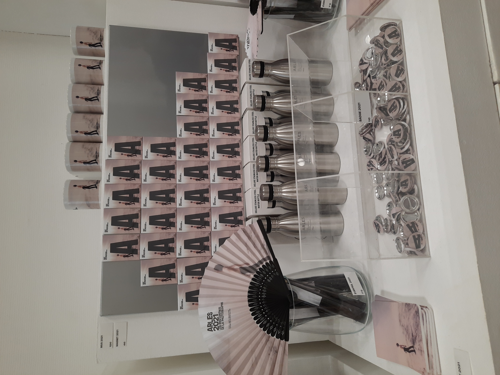
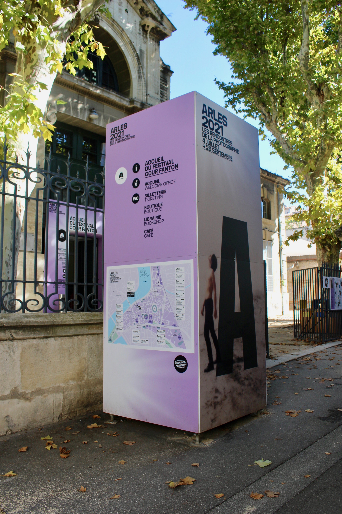
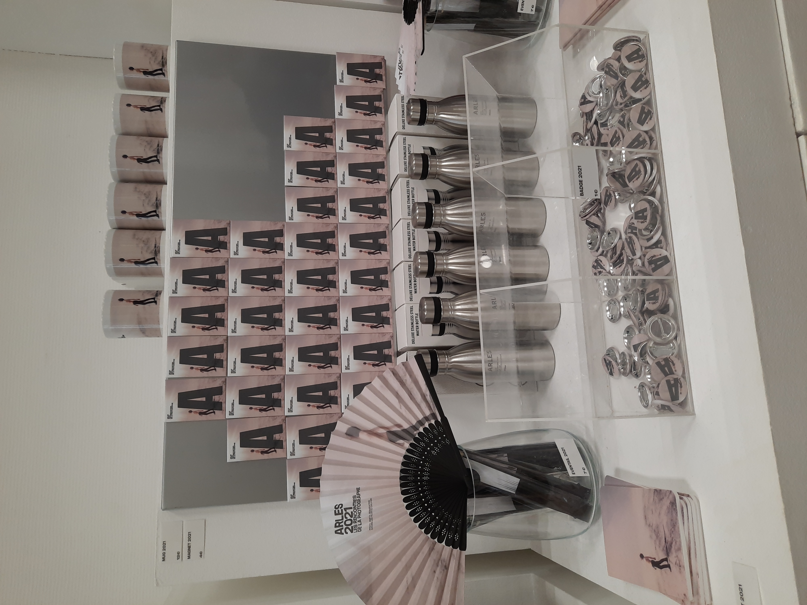
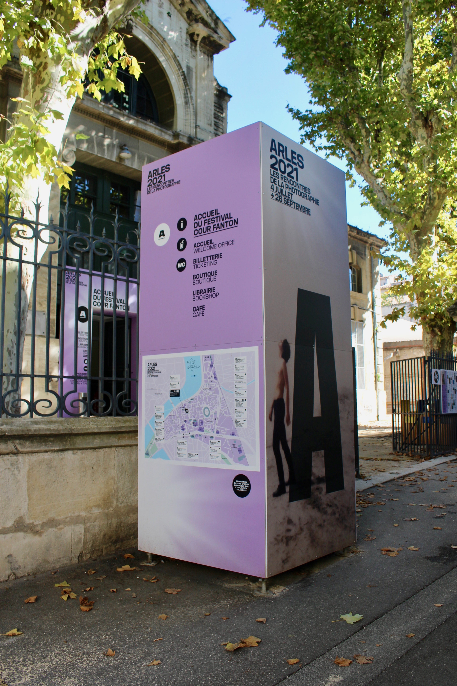

- ←
- Les Rencontres de la Photographie
- →
#STAGE #SIGNALÉTIQUE #IDENTITÉ VISUELLE #PHOTOGRAPHIES

Affiches-Bâches-Magnets-Plans
Durant mon stage de fin de quatrième année, d’une durée de six mois, chez ABM Studio j’ai pu participer entre autre à la conception de divers supports de signalétique (kaké- monos, bâches PVC, totems...) ainsi que goodies, plans, cartes postales, animation After Effect pour le Festival de la Photographie d'Arles edition 2021. Cette expérience professionnelle m’a permis de savoir appréhender des fichiers grands formats, de décliner une identité sur différents médiums ainsi que de suivre un projet dans sa globalité. Réfléchir aux premières maquettes, voir l’installation sur place en passant par les échanges clients. Ce stage a aussi été un moyen de découvrir de manière plus approfondie le monde de la photographie.
 


